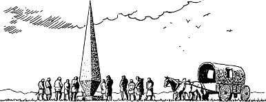

104
As you approach the Oridon Stone you see a dozen men standing in a circle around its base, and a horse-drawn wagon parked close by. They salute you in a friendly manner as you rein in your horses and come to a halt beside their wagon. One of them, a bearded man with ruddy cheeks, leaves the circle and walks over to introduce himself and his companions. You learn that they, like Prince Karvas, are from Siyen. They are the great-great-grandchildren of warriors who fell here in battle exactly one hundred years ago to the day. They have come here all the way from Seroa on a pilgrimage to honour the memory of their fallen ancestors.
{kind=link}

After a few minutes, Prince Karvas dismounts and joins the circle of men at the Oridon Stone. He bows his head in reverence and offers up a silent prayer to Ishir to watch over the souls of the brave Siyenese who sacrificed their lives on this field of battle. While Karvas is praying, you talk quietly with the bearded man and learn that his name is Daventi. When you tell him that you and your companion are bound for Siyen, he offers you some words of advice. He tells you to be wary should you wish to cross the River Ioma at Voshno, the next town on the trail. The bridge has been seized by robber knights from Cavalia and they are demanding a heavy toll from anyone seeking to use the bridge. Rather than cross the river at Voshno, the man suggests that you should continue north along the trail. Three miles north of Voshno is a small farmstead at the river’s edge. For a moderate charge the farmer will ferry you and your horses across the river by raft.
Having paid his respects, Karvas walks away from the monolith and remounts his horse. As you turn your horses to leave, the friendly Siyenese salute you and bid you both good luck and godspeed on the road ahead. You return their kind gesture with a Kai salute before you and Karvas gallop off across the plain to resume your ride along the dusty trail.